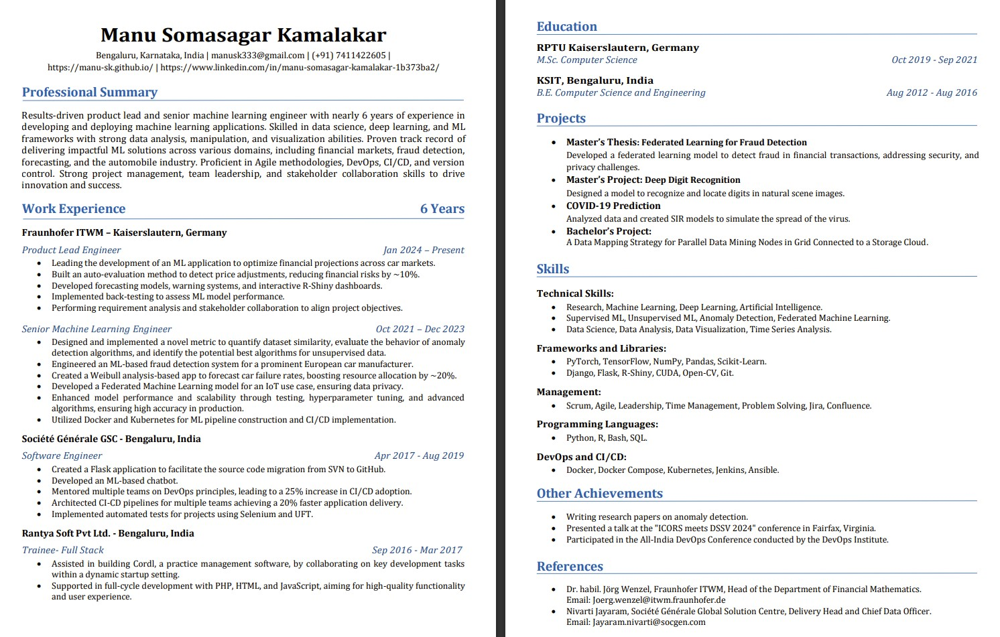

{% include quote.html quote=page.quote author=page.author %}

<div class="row resume-wrapper">
  <a href="./assets/cv_manu.pdf" title="click to open in pdf viewer" target="_blank">
    
    <button class="fill col s8 offset-s2 m4 offset-m4">open as pdf</button>
  </a>
</div>
